Hi 👋 I'm Miranda, a product designer and storyteller at Brown University studying Computer Science.
I believe good design brings people together to solve problems and create social impact.
But before I was a designer, I started as a:
- traditional artist passionate about Chinese politics and culture (see my works here!)
- comic artist (30+ pieces from 2014-18)
- Brand Design Intern at Superunion (where I learned good storytelling is worth a lot of 💰)
- volunteer and teaching instructor at a summer camp for rural high schoolers
I eventually realized that as a pure artist, I was handicapped because I rely on others to actualize my ideas.
So I looked for any opportunities to learn how to build stuff in college:
- Took an infamous intro CS class, felt overwhelmed but also empowered that I can create my own things
- Designed for Hack@Brown, where I found my voice in advocating for inclusion and accessibility in tech
- TA for CS1300 UI/UX at Brown, teaching others how to find solutions to human problems
- Researched at the 3D Perception and Action Lab, getting a taste of tomorrow's problems in VR
When COVID hit, instead of attending Zoom University, I took a gap semester to test my design skills in the real world:
- UX Design Intern at SenseTime in Shanghai, making artificial intelligence products easy to use for the aging population
- Designer for an Autism Education app, learning how to maximize accessibility for children with disabilities
- Embarked on a self-care journey using design thinking (inspired by this article)
I'm excited to keep learning and advocating for social good in my journey. Outside of design, catch me:
- pole dancing!
- making homemade calligraphy cards
- taking flying kick photos all over the world
- planning my study abroad in France after I graduate
If you are all the way down here already, thanks for taking this journey with me 🥳 Reach out to me at miranda_mo@brown.edu to chat!
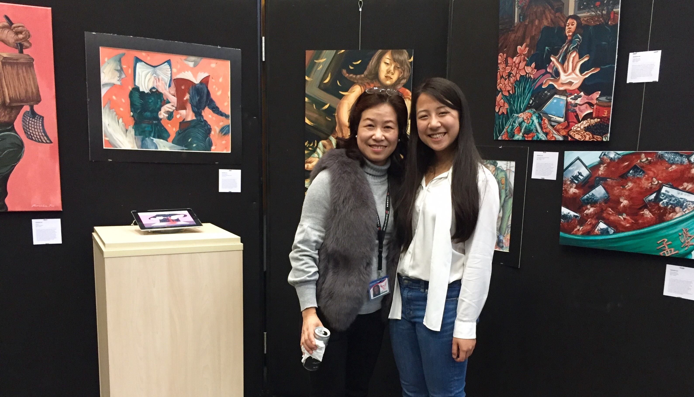
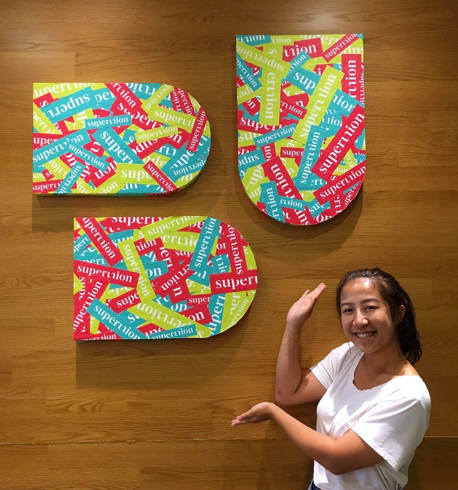
 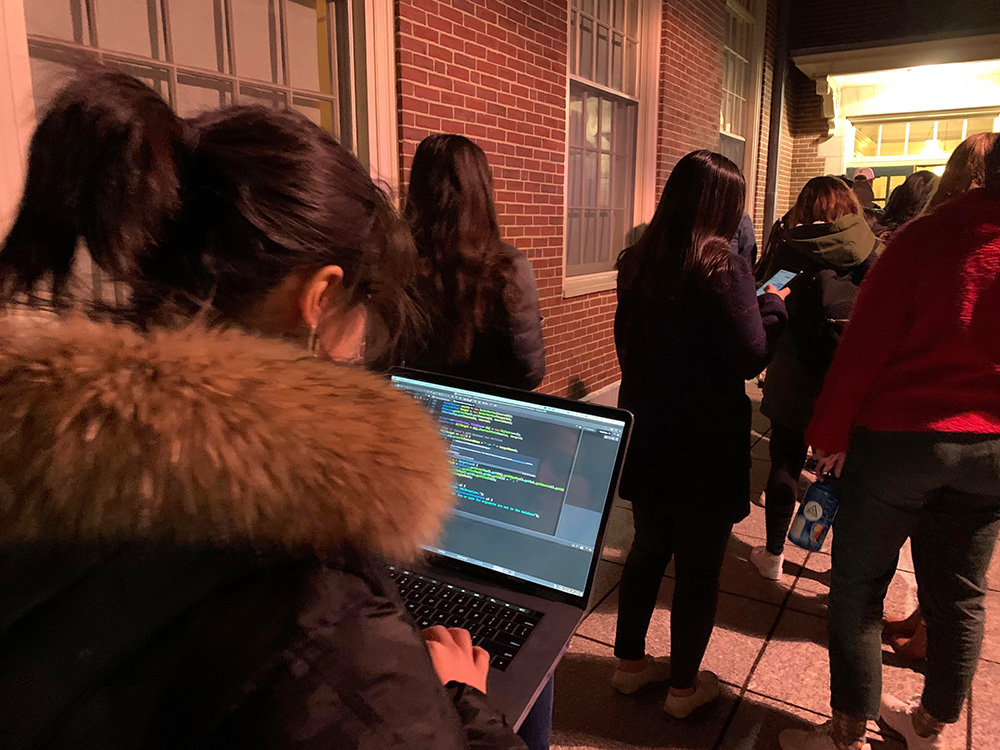
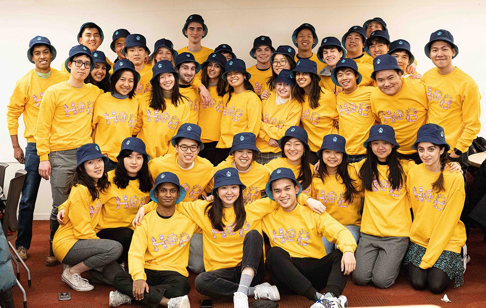
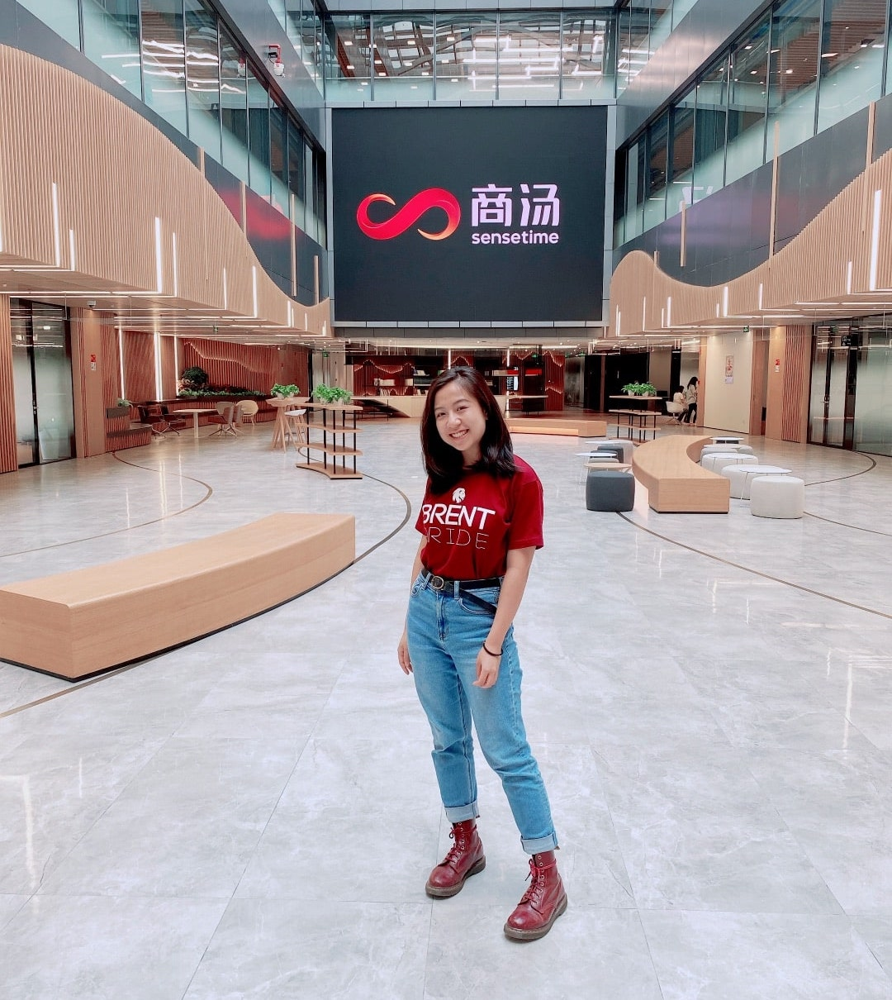
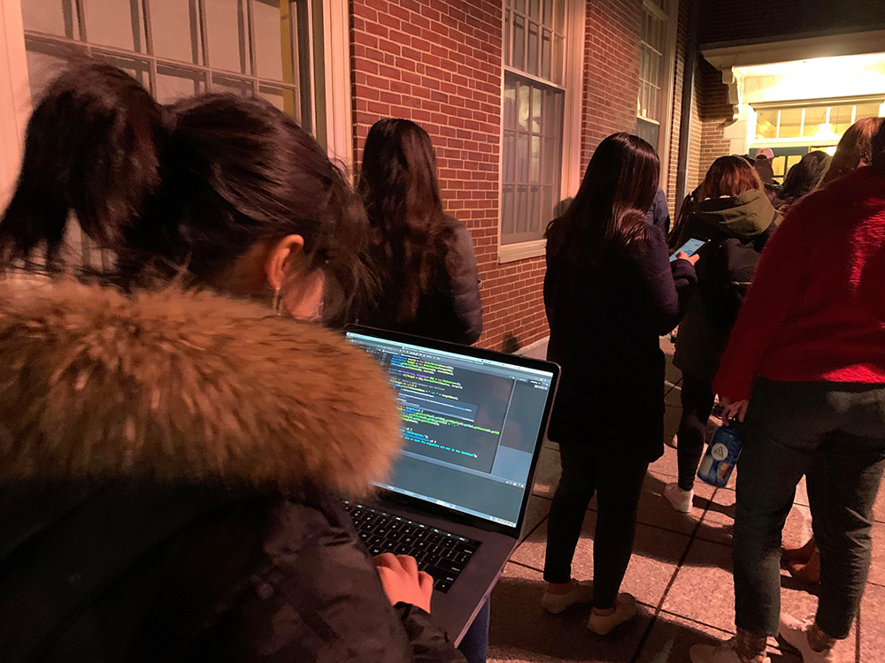
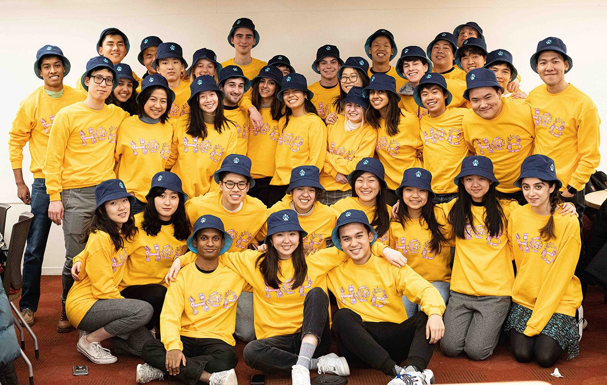
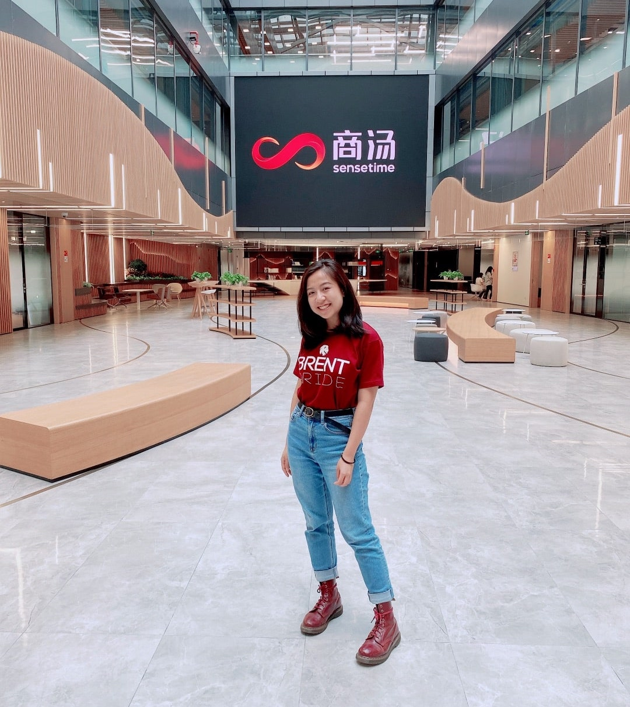
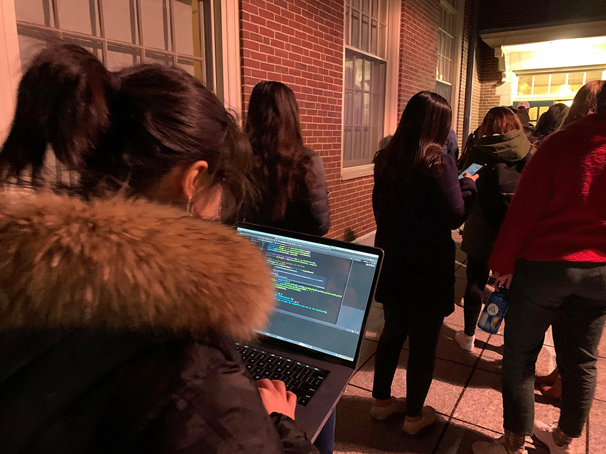
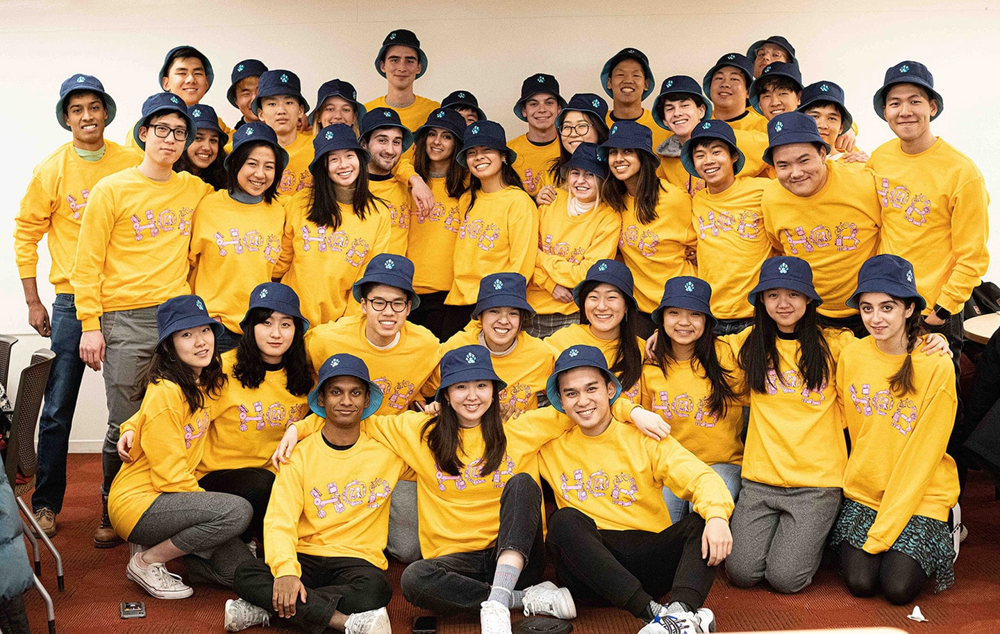
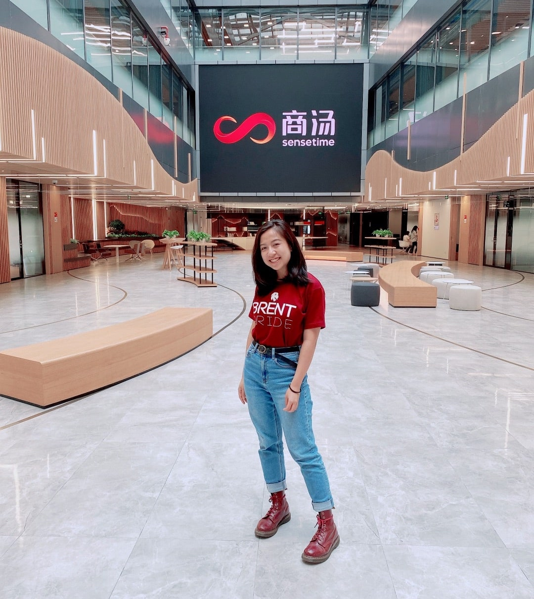